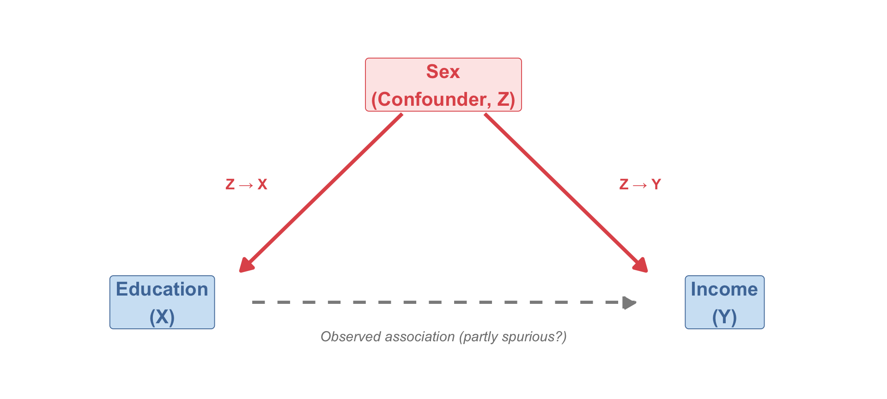
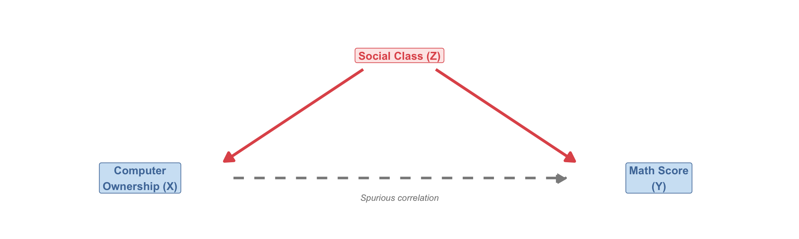
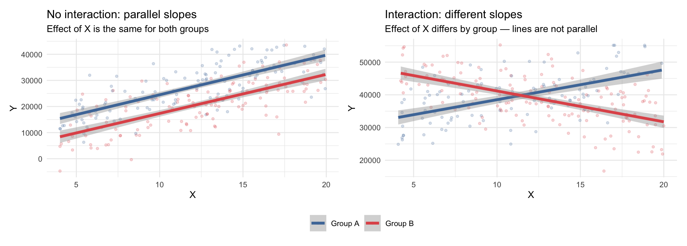
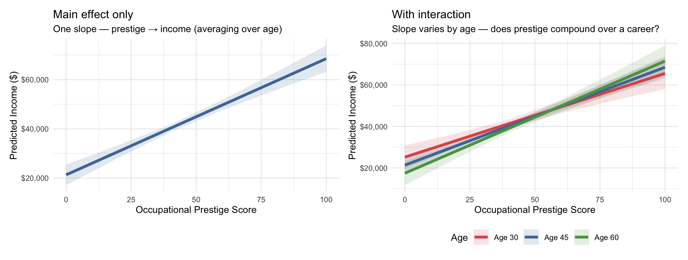
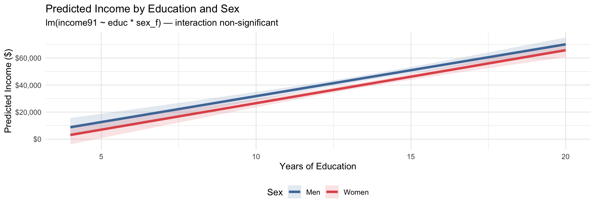
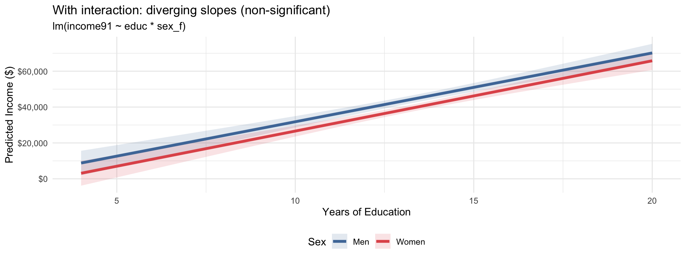
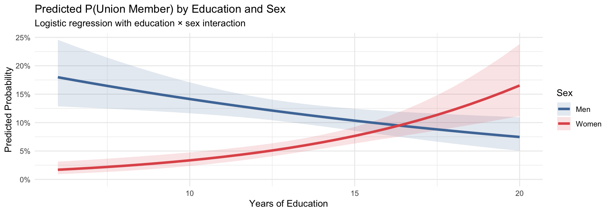
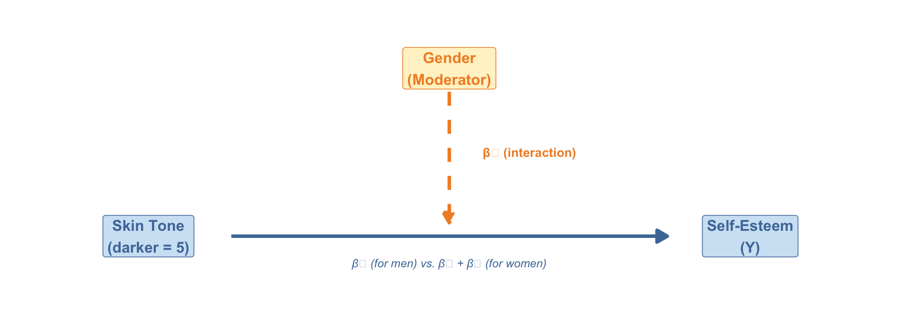

Week 13
Sociology 106: Quantitative Sociological Methods
April 14, 2026
Agenda
Housekeeping:
- HW #10, HW #11, Revised Proposal with Outline
Statistical content — two parts:
- Part 1: Controlling for confounders — closing back doors in regression
- Part 2: Interaction effects — when the relationship depends on context
Reading discussion:
- Thompson & Keith (2001) — interactions in a classic race & gender study
In-class lab:
- Running interactions on your research data
Housekeeping
Weekly Assignment #10
- Due Thursday, April 16
- Logistic regression on a binary outcome — covered last week
Weekly Assignment #11
- Due Thursday, April 23
- Run an interaction analysis on your research data (see Assignments slide)
Revised Proposal with Outline
- Due Thursday, April 16 — two days away!
- Describe whether your analysis will include any controls or interaction terms
In-class presentations
- April 28/May 5 — 7–10 minutes per student, use this slide template to keep it short
Where We Are in the Course
- Week 11: OLS regression — how strong is the linear relationship between X and Y?
- Week 12: Logistic regression — predicting binary outcomes
- This week (Week 13): Extensions — controlling for confounders and interaction effects
- Next week (Week 14): More extensions — mediation and wrap-up
The big picture: from association to causal story
Weeks 11–12 asked: “Is there a relationship between X and Y?” This week asks: “Is that relationship spurious? And does it work the same way for everyone — or does it depend on who you are?” These questions bring us closer to causal inference and to understanding the social mechanisms behind the patterns we observe.
Questions?
Part 1: Controls and Confounding
Closing the back door
Why We Add Control Variables
We want to estimate the “causal” effect of X on Y. Three conditions for causality:
| Condition | What it means |
|---|---|
| 1. Correlation | X and Y are statistically associated |
| 2. Temporal priority | X comes before Y in time |
| 3. Non-spuriousness | No third variable Z is creating a false association between X and Y |
A confounding variable Z:
- Has a causal effect on X (Z → X)
- Has a causal effect on Y (Z → Y)
- Comes before both X and Y in time
- Creates a spurious statistical association between X and Y
We remove the confound by controlling for Z in the regression: lm(Y ~ X + Z)
What “controlling for Z” actually means
Adding Z to the regression asks: “Among people with the same value of Z, what is the relationship between X and Y?” We are comparing like to like.
This is the foundation — but causal inference is harder
What we’re doing here is the workhorse strategy for observational causal inference. But it has real limits: we can only control for variables we actually observe and measure. Unmeasured confounders still bias our estimates — and we can never fully rule them out with regression alone.
Modern methods designed for this problem include: difference-in-differences (exploiting before/after comparisons), regression discontinuity (exploiting thresholds), and instrumental variable analysis (finding exogenous variation in X). This course builds the logic; but there are more sophisticated methods you’ll need to go deeper. For now: controlling for observed confounders is good practice, but “I controlled for everything” is always a theoretical claim, not a statistical guarantee.
Confounding: The Path Model
Without controlling for Z, we observe a statistical association between X and Y. But that association is partly due to Z’s effects on both — not just the direct X → Y path.
Our running example:
- X = Years of education
- Y = Income (1991)
- Z = Sex (a potential confounder)
Men and women may differ in both education level (Z → X) and in income (Z → Y). If we don’t control for sex, part of what looks like an “education effect” is really a “sex effect.”
A Classic Example: Computers and Test Scores
In the early 1990s, researchers found: households with home computers had children with higher math test scores.
Does computer ownership cause better academic performance?

Social class caused both computer ownership and math achievement — it was the confound:
- Higher-class families could afford computers (Z → X)
- Higher-class families also provided better academic resources (Z → Y)
When researchers controlled for social class — comparing families at the same class level — the computer–test score correlation vanished.
The general lesson:
A variable Z is a confounder if: (1) Z → X, (2) Z → Y, and (3) Z precedes both X and Y in time. To remove its influence, we add Z to the regression: lm(Y ~ X + Z). Once we do this, we estimate the effect of X within levels of Z — comparing like with like.
A critical warning: not everything should be controlled
Only control for variables that: 1. Come before X and Y in time (prior common causes) 2. Are not themselves caused by X (otherwise you create new bias)
Do NOT control for:
- Mediators (variables on the X → Y causal path) — this would underestimate X’s total effect
- Colliders (variables caused by both X and Y) — this actually introduces new bias
For now: include controls that have a plausible prior causal connection to both your X and Y. We’ll cover mediation — and why you shouldn’t control for it — in Week 14.
Controlling for Confounders in R
Adding variables with + holds each one constant while estimating the others.
Interpreting the education coefficient across models:
- Bivariate model: effect of education, ignoring sex and age
- +Sex model: effect of education among people of the same sex
- +Sex+Age model: effect of education among people of the same sex and age
Each model answers a slightly different question.
modelsummary(
list("Bivariate" = model_biv,
"+ Sex" = model_control,
"+ Sex + Age" = model_multi),
coef_rename = c("(Intercept)" = "Intercept",
"educ" = "Years of Education",
"sex_ffemale" = "Female",
"age" = "Age"),
stars = TRUE,
fmt = 0,
title = "OLS: Income by Education (with Controls)",
gof_map = c("nobs", "r.squared", "adj.r.squared")
)| Bivariate | + Sex | + Sex + Age | |
|---|---|---|---|
| + p < 0.1, * p < 0.05, ** p < 0.01, *** p < 0.001 | |||
| Intercept | -9830** | -7092* | -13468** |
| (3468) | (3557) | (4562) | |
| Years of Education | 3881*** | 3877*** | 4006*** |
| (254) | (254) | (260) | |
| Female | -4919*** | -4984*** | |
| (1472) | (1471) | ||
| Age | 104* | ||
| (47) | |||
| Num.Obs. | 2517 | 2517 | 2517 |
| R2 | 0.085 | 0.089 | 0.091 |
| R2 Adj. | 0.084 | 0.088 | 0.090 |
Reading the controls table:
Education coefficient: In the bivariate model, each additional year of education is associated with a $3,881 increase in income. After controlling for sex, the coefficient is $3,877, and after controlling for both sex and age, it is $4,006.
Female coefficient: After controlling for education, women earn approximately $4,919 less than men. This is the direct effect of sex on income, holding education constant — evidence of a gender wage gap that is not explained by differences in educational attainment.
R² increases as we add controls. But more controls ≠ always better. Only include theoretically motivated confounders.
Questions?
Part 2: Interaction Effects
When the relationship depends on who you are
What is Moderation?
Sometimes, the effect of X on Y is not the same for everyone — it varies depending on a third variable Z.
We call this moderation (or an interaction effect): - Z moderates the relationship between X and Y - The effect of X on Y depends on the value of Z
Sociological examples:
- Does education pay off the same for men and women? (education × sex → income)
- Does income affect health the same across racial groups? (income × race → health)
- Does job training help during recessions or only during expansions? (training × economy → employment)
Moderation vs. Confounding — critical distinction
| Confounding | Moderation | |
|---|---|---|
| What Z does | Creates spurious X–Y association | Changes the size of the X → Y effect |
| Goal | Remove Z’s bias by controlling | Model the heterogeneity across Z |
| Model | Y ~ X + Z |
Y ~ X + Z + X:Z |
| Question | “What is X’s effect, net of Z?” | “Is X’s effect different for different values of Z?” |
Parallel vs. Non-Parallel Slopes
The key visual difference between a model without an interaction and one with an interaction:

The key visual test for an interaction:
In the no-interaction model (Y ~ X + Z), the lines are parallel — the same slope for every group. In the interaction model (Y ~ X * Z), the slopes differ. The lines don’t need to cross — they just need to be non-parallel. Even a slight divergence (one slope steeper than the other) constitutes an interaction. The interaction term’s statistical significance tells us whether that difference in slopes is real or due to sampling noise.
The Interaction Model
To model an interaction, we add the product of the two predictors:
\[\hat{Y} = \alpha + \beta_1 X_1 + \beta_2 X_2 + \beta_3 (X_1 \times X_2)\]
What each coefficient means when \(X_2\) is binary (0 = reference, 1 = other):
| Coefficient | Meaning |
|---|---|
| \(\beta_1\) | Effect of \(X_1\) on \(Y\) for the reference group (\(X_2 = 0\)) |
| \(\beta_2\) | Difference in baseline \(Y\) for \(X_2 = 1\) vs. \(X_2 = 0\) (when \(X_1 = 0\)) |
| \(\beta_3\) | The interaction: how much the effect of \(X_1\) changes when \(X_2 = 1\) instead of 0 |
Computing the effect for each group:
\[\text{Effect of } X_1 \text{ for reference group: } \hat\beta_1\] \[\text{Effect of } X_1 \text{ for other group: } \hat\beta_1 + \hat\beta_3\]
\(\hat\beta_3\) is the difference in slopes between the two groups. If \(\hat\beta_3 = 0\), the slopes are identical — no interaction.
In R: use * to include both main effects and the interaction term:
Always include lower-order (main effect) terms
A critical rule: whenever you include an interaction term \(X_1 \times X_2\), you must also include the main effects \(X_1\) and \(X_2\) as separate terms in the same model. This is called the hierarchy principle.
Using Y ~ X1 * X2 in R enforces this automatically — it expands to Y ~ X1 + X2 + X1:X2. Never use Y ~ X1:X2 alone without the main effects — the model would be misspecified and the coefficients uninterpretable (the “effect of X₁ for the reference group” would lose its meaning without \(\beta_1\) in the model).
Interpreting Interaction Terms
Both X₁ and X₂ are continuous (e.g., occupational prestige × age → income).
\[\hat{Y} = \alpha + \beta_1 X_1 + \beta_2 X_2 + \beta_3 (X_1 \times X_2)\]
- Effect of X₁ = \(\beta_1 + \beta_3 X_2\) — the slope for X₁ depends on the value of X₂
- Effect of X₂ = \(\beta_2 + \beta_3 X_1\) — the slope for X₂ depends on the value of X₁
Interpreting direction
The sign of \(\beta_3\) tells you how the relationship changes:
- \(\beta_3 > 0\): as \(X_2\) increases, the effect of \(X_1\) on \(Y\) strengthens
- \(\beta_3 < 0\): as \(X_2\) increases, the effect of \(X_1\) on \(Y\) weakens
Our example: lm(income91 ~ prestg80 * age) — does the income payoff of occupational prestige depend on career stage? If \(\beta_3 > 0\), prestige matters more for income among older workers; if \(\beta_3 < 0\), prestige pays off less as workers age. Use ggpredict() to visualize the pattern at a few representative ages.
Most common in sociology: continuous X₁, binary X₂ (e.g., sex, race indicator, treatment/control).
\[\hat{Y} = \alpha + \beta_1 X_1 + \beta_2 X_2 + \beta_3 (X_1 \times X_2)\]
| Group | Slope for X₁ | Formula |
|---|---|---|
| \(X_2 = 0\) (reference) | \(\beta_1\) | Slope for reference group |
| \(X_2 = 1\) (other group) | \(\beta_1 + \beta_3\) | Reference slope + interaction |
| Difference in slopes | \(\beta_3\) | The interaction term itself |
Our example: education × sex → income
- \(\beta_1\) = income return to education for men (reference)
- \(\beta_3\) = how much women’s return differs from men’s — a positive \(\beta_3\) means women benefit more per year; negative means women benefit less
- Test of moderation: is \(\beta_3\) statistically significantly different from zero?
Both X₁ and X₂ are binary (e.g., race × sex → income).
\[\hat{Y} = \alpha + \beta_1 X_1 + \beta_2 X_2 + \beta_3 (X_1 \times X_2)\]
| X₁ | X₂ | Predicted Y |
|---|---|---|
| 0 | 0 | \(\alpha\) (double reference) |
| 1 | 0 | \(\alpha + \beta_1\) |
| 0 | 1 | \(\alpha + \beta_2\) |
| 1 | 1 | \(\alpha + \beta_1 + \beta_2 + \beta_3\) |
- \(\beta_3\) measures non-additivity: the effect of X₁ is different when X₂ = 1 vs. X₂ = 0
- This is sometimes called a multiplicative interaction or a synergistic / suppressive effect
Worked Examples: Interaction Terms
Model: lm(income91 ~ prestg80 * age) — does the income payoff of occupational prestige depend on career stage?
| (1) | |
|---|---|
| + p < 0.1, * p < 0.05, ** p < 0.01, *** p < 0.001 | |
| Intercept | 32974.51*** |
| (6181.36) | |
| Occupational Prestige | 266.44+ |
| (139.53) | |
| Age | -258.42* |
| (130.31) | |
| Prestige × Age | 4.56 |
| (2.94) | |
| Num.Obs. | 2517 |
| R2 | 0.041 |
Interpretation
Prestige × Age (\(\beta_3\) = 4.56) tells us that the prestige → income slope grows stronger as workers get older — in other words, prestige compounds over a career. In the margins plot on the next slide, this will appear as steeper lines for older ages.
However, remember that the interaction is not statistically significant.
Model: lm(income91 ~ educ * sex_f) — does the income return to education differ by sex?
| (1) | |
|---|---|
| + p < 0.1, * p < 0.05, ** p < 0.01, *** p < 0.001 | |
| Intercept | -6547 |
| (4848) | |
| Years of Education | 3836*** |
| (354) | |
| Female | -6038 |
| (6928) | |
| Education × Female | 84 |
| (508) | |
| Num.Obs. | 2517 |
| R2 | 0.089 |
| Group | Slope for educ | Formula |
|---|---|---|
| Men (reference) | \(\beta_1\) | Baseline slope |
| Women | \(\beta_1 + \beta_3\) | Baseline + interaction |
| Difference | \(\beta_3\) | The interaction term itself |
Interpretation
The interaction of Education × Female (\(\beta_3\) = $84) tells us that women’s income return per additional year of education is $84 more than men’s. Men gain $3,836 per year of education; women gain $3,920 — a difference that is not statistically significant (p = 0.869).
High-level summary: Education is strongly positively associated with income for both men and women. While women appear to have slightly higher returns to education than men (interaction term), this difference is not statistically significant. Women also have lower predicted income at low levels of education, though this difference is not statistically significant.
However, remember that the interaction is not statistically significant.
Model: lm(income ~ Black * female) — does the racial income gap differ by sex?
| (1) | |
|---|---|
| + p < 0.1, * p < 0.05, ** p < 0.01, *** p < 0.001 | |
| Intercept | 64914*** |
| (663) | |
| Black | -11319*** |
| (1127) | |
| Women | -17639*** |
| (941) | |
| Black × Women | 2683 |
| (1657) | |
| Num.Obs. | 400 |
| R2 | 0.601 |
Predicted incomes (2×2 table):
| White | Black | |
|---|---|---|
| Men | \(\alpha\) = $64,914 | \(\alpha + \beta_1\) = $53,595 |
| Women | \(\alpha + \beta_2\) = $47,275 | \(\alpha + \beta_1 + \beta_2 + \beta_3\) = $38,639 |
Where: \(\alpha\) = $64,914, \(\beta_1\) (Black) = −$11,319, \(\beta_2\) (Women) = −$17,639, \(\beta_3\) (interaction) = $2,683
Race gap within sex:
- Among men: $64,914 − $53,595 = $11,319 (\(\beta_1\))
- Among women: $47,275 − $38,639 = $8,636 (\(\beta_1 + \beta_3\))
Gender gap within race:
- Among white workers: $64,914 − $47,275 = $17,639 (\(\beta_2\))
- Among Black workers: $53,595 − $38,639 = $14,956 (\(\beta_2 + \beta_3\))
Race + gender gap (white men vs. Black women):
- $64,914 − $38,639 = $26,275 (\(\beta_1 + \beta_2 + \beta_3\))
Interpretation
Black × Women (\(\beta_3\) = $2,683, p = 0.106) is not statistically significant. We therefore cannot conclude that the racial income gap differs by sex — the data are consistent with the gaps being the same for men and women. The 2×2 table above illustrates the mechanics of reading a binary × binary model, but the interaction term itself does not clear the significance threshold needed to claim that non-additivity is real rather than sampling noise.
Visualizing Interaction Terms
Model: lm(income91 ~ prestg80 * age) — does the income payoff of occupational prestige depend on career stage?
Code
p_main <- ggpredict(model_prestige, terms = "prestg80") |>
ggplot(aes(x = x, y = predicted)) +
geom_ribbon(aes(ymin = conf.low, ymax = conf.high), alpha = 0.15, fill = "#4E79A7") +
geom_line(linewidth = 1.4, color = "#4E79A7") +
scale_y_continuous(labels = scales::dollar_format(big.mark = ",")) +
labs(
title = "Main effect only",
subtitle = "One slope — prestige → income (averaging over age)",
x = "Occupational Prestige Score",
y = "Predicted Income ($)"
) +
theme_minimal(base_size = 10)
p_int <- ggpredict(model_prestige, terms = c("prestg80", "age [30, 45, 60]")) |>
ggplot(aes(x = x, y = predicted, color = group, fill = group)) +
geom_ribbon(aes(ymin = conf.low, ymax = conf.high), alpha = 0.15, color = NA) +
geom_line(linewidth = 1.4) +
scale_color_manual(
values = c("#E15759", "#4E79A7", "#59A14F"),
labels = c("Age 30", "Age 45", "Age 60"),
name = "Age"
) +
scale_fill_manual(
values = c("#E15759", "#4E79A7", "#59A14F"),
labels = c("Age 30", "Age 45", "Age 60"),
name = "Age"
) +
scale_y_continuous(labels = scales::dollar_format(big.mark = ",")) +
labs(
title = "With interaction",
subtitle = "Slope varies by age — does prestige compound over a career?",
x = "Occupational Prestige Score",
y = "Predicted Income ($)"
) +
theme_minimal(base_size = 10) +
theme(legend.position = "bottom")
p_main + p_int
Reading the plot
Each line shows the prestige → income slope at a different career stage (30, 45, 60).
- Parallel lines = no interaction, prestige pays off the same regardless of age.
- Diverging lines = interaction, the prestige premium grows (or shrinks) with age.
The sign of Prestige × Age in the model table tells you the direction; the plot makes it concrete.
Model: lm(income91 ~ educ * sex_f) — does the income return to education differ by sex?
Code
ggpredict(model_interact, terms = c("educ [4:20 by=0.5]", "sex_f")) |>
ggplot(aes(x = x, y = predicted, color = group, fill = group)) +
geom_ribbon(aes(ymin = conf.low, ymax = conf.high), alpha = 0.15, color = NA) +
geom_line(linewidth = 1.4) +
scale_color_manual(
values = c("male" = "#4E79A7", "female" = "#E15759"),
labels = c("Men", "Women"), name = "Sex"
) +
scale_fill_manual(
values = c("male" = "#4E79A7", "female" = "#E15759"),
labels = c("Men", "Women"), name = "Sex"
) +
scale_y_continuous(labels = scales::dollar_format(big.mark = ",")) +
labs(
title = "Predicted Income by Education and Sex",
subtitle = "lm(income91 ~ educ * sex_f) — interaction non-significant",
x = "Years of Education",
y = "Predicted Income ($)"
) +
theme_minimal(base_size = 11) +
theme(legend.position = "bottom")
Reading the plot
The two lines show the income slope for men (blue) and women (red) across years of education. We know from the model output that the interaction is not significant and the lines are basically parallel. Additionally, the CIs overlap at nearly all points.
Model: lm(income ~ Black * female) — does the racial income gap differ by sex?
Code
ggpredict(model_bb, terms = c("Black", "female")) |>
ggplot(aes(x = x, y = predicted, color = group, group = group)) +
geom_point(size = 4) +
geom_line(linewidth = 1.2) +
geom_errorbar(aes(ymin = conf.low, ymax = conf.high), width = 0.08, linewidth = 1.0) +
scale_color_manual(
values = c("Men" = "#4E79A7", "Women" = "#E15759"), name = "Sex"
) +
scale_y_continuous(labels = scales::dollar_format(big.mark = ",")) +
labs(
title = "Predicted Income by Race and Sex",
subtitle = "lm(income ~ Black * female) — interaction: non-additivity of race and sex gaps",
x = "Race",
y = "Predicted Income ($)"
) +
theme_minimal(base_size = 11) +
theme(legend.position = "bottom")
Reading the plot
The drop from White to Black on each line represents the racial income gap. Parallel lines mean the gap is identical for men and women — no interaction. Non-parallel lines suggest the gap differs by sex.
Black × Women (\(\beta_3\) = $2,683, p = 0.106) is not statistically significant — we cannot conclude that the racial income gap actually differs by sex. Any non-parallelism visible in the plot is consistent with sampling noise.
Running Example: Does Education Pay Off Equally?
Research question: Does each additional year of education translate into the same income gain for men and women?
Why this matters sociologically:
A central debate in stratification research: Do women earn less simply because they have less education? Or does the return to education itself differ by gender — meaning each year of education is worth more in the labor market for men than for women?
If \(\beta_3 < 0\) (education × female), this is evidence of structural inequality: even with identical credentials, women receive a lower wage premium per year of schooling.
(Intercept) educ sex_ffemale educ:sex_ffemale
-6547.43864 3836.33531 -6037.51913 83.89174 Interaction Model Results
Code
modelsummary(
list("No Interaction" = model_main,
"With Interaction" = model_interact),
coef_rename = c("(Intercept)" = "Intercept",
"educ" = "Years of Education",
"sex_ffemale" = "Female",
"educ:sex_ffemale" = "Education × Female"),
stars = TRUE,
fmt = 0,
title = "OLS: Income ~ Education × Sex",
gof_map = c("nobs", "r.squared", "adj.r.squared")
)| No Interaction | With Interaction | |
|---|---|---|
| + p < 0.1, * p < 0.05, ** p < 0.01, *** p < 0.001 | ||
| Intercept | -7092* | -6547 |
| (3557) | (4848) | |
| Years of Education | 3877*** | 3836*** |
| (254) | (354) | |
| Female | -4919*** | -6038 |
| (1472) | (6928) | |
| Education × Female | 84 | |
| (508) | ||
| Num.Obs. | 2517 | 2517 |
| R2 | 0.089 | 0.089 |
| R2 Adj. | 0.088 | 0.088 |
Interpreting the interaction model:
From the regression output:
- Education (3836): Effect of each year of education for men (the reference group)
- Female (-$6,038): Difference in baseline income for women vs. men at education = 0 — not substantively meaningful on its own
- Education × Female (84): Women receive $84 more per additional year of education compared to men — this is the interaction
Slopes by group:
| Group | Income return per year of education |
|---|---|
| Men | $3,836 |
| Women | $3,836 + (84) = $3,920 |
| Difference | 84 (p = 0.869) |
Note: this interaction is not statistically significant
In this example, p = 0.869 — we fail to reject H₀ that the education slope is the same for men and women. Even if both lower-order terms (education, female) were significant (only education is here), it’s irrelevant: significance of main effects tells you nothing about whether the interaction is real. The only test that matters for moderation is the p-value on the interaction term itself (educ:sex_ffemale). A non-significant result means the data are consistent with parallel slopes — not that an interaction definitely doesn’t exist (see the power note later).
We can also calculate predicted incomes for specific profiles:
# A tibble: 4 × 3
educ sex_f predicted_income
<dbl> <chr> <chr>
1 12 male $39,489
2 12 female $34,458
3 16 male $54,834
4 16 female $50,139 The income gap by education level:
- At high school education (12 years): men earn $39,489 vs. women $34,458 — a gap of $5,031
- At college education (16 years): men earn $54,834 vs. women $50,139 — a gap of $4,695
If the interaction term is negative, the gender wage gap widens with education — more education amplifies inequality, not diminishes it.
Code
ggpredict(model_interact, terms = c("educ [4:20 by=0.5]", "sex_f")) |>
ggplot(aes(x = x, y = predicted, color = group, fill = group)) +
geom_ribbon(aes(ymin = conf.low, ymax = conf.high), alpha = 0.15, color = NA) +
geom_line(linewidth = 1.4) +
scale_color_manual(values = c("male" = "#4E79A7", "female" = "#E15759"),
labels = c("Men", "Women"), name = "Sex") +
scale_fill_manual(values = c("male" = "#4E79A7", "female" = "#E15759"),
labels = c("Men", "Women"), name = "Sex") +
scale_y_continuous(labels = scales::dollar_format(big.mark = ",")) +
labs(
title = "With interaction: diverging slopes (non-significant)",
subtitle = "lm(income91 ~ educ * sex_f)",
x = "Years of Education", y = "Predicted Income ($)"
) +
theme_minimal(base_size = 11) +
theme(legend.position = "bottom")
What to look for in an interaction plot:
Line slope: A steeper line = higher income return per year of education for that group.
Line gap at each X value: The vertical distance between men’s and women’s predicted incomes. If the lines are parallel (same slope), the gap is constant; if men’s line is steeper, the gap widens with education.
Confidence ribbons: Overlapping ribbons signal uncertainty about whether the two slopes are truly different. The formal test is the p-value on the interaction term — not visual ribbon comparison.
For your data: Replace sex_f with your moderating variable and run the same code. Do the slopes diverge?
Testing and Reporting the Interaction
Is the interaction statistically significant?
The interaction term \(\hat\beta_3\) has its own standard error, t-statistic, and p-value in the regression output. This tests:
\[H_0: \beta_3 = 0 \quad \text{(no interaction — slopes are the same for both groups)}\] \[H_A: \beta_3 \neq 0 \quad \text{(slopes differ between groups)}\]
In our example: p = 0.869 for the education × female interaction term.
Reporting checklist for an interaction result:
- State the substantive question: Does the effect of X on Y vary by Z?
- Report the interaction coefficient: \(\hat\beta_3\) = 84 (\(p = 0.869\))
- State the group-specific slopes: men = $3,836/year; women = $3,920/year
- Show the visualization: margins plot with two lines, CIs
- Interpret substantively: what does it mean that the slopes differ? Connect to theory.
A note on statistical power
Interaction terms are often hard to detect — you need a large sample and a reasonably strong moderating effect. A non-significant interaction term does not necessarily mean “no interaction exists in the population.” It may mean the study is underpowered. Be cautious about drawing strong null conclusions from a single insignificant \(\hat\beta_3\).
Interactions in Logistic Regression
Interaction terms work the same way in logistic regression — same syntax, same logic:
Code
attain_logit <- attain |>
filter(!is.na(union_member), !is.na(educ), !is.na(sex_f))
# Logistic regression with interaction
model_logit_int <- glm(union_member ~ educ * sex_f,
family = binomial,
data = attain_logit)
modelsummary(model_logit_int,
exponentiate = TRUE,
coef_rename = c("(Intercept)" = "Intercept",
"educ" = "Years of Education",
"sex_ffemale" = "Female",
"educ:sex_ffemale" = "Education × Female"),
stars = TRUE,
title = "Logistic Regression with Interaction (Odds Ratios)",
gof_map = c("nobs", "AIC"))| (1) | |
|---|---|
| + p < 0.1, * p < 0.05, ** p < 0.01, *** p < 0.001 | |
| Intercept | 0.337** |
| (0.120) | |
| Years of Education | 0.931** |
| (0.025) | |
| Female | 0.018*** |
| (0.012) | |
| Education × Female | 1.278*** |
| (0.058) | |
| Num.Obs. | 2985 |
Interpreting the logistic interaction OR:
Education × Female (OR = 1.278, p < 0.001) is statistically significant. An OR > 1 means women’s odds multiply by more per year of education than men’s — the education effect is stronger for women. Use ggpredict() to translate this into predicted probabilities and see the gap concretely.
Code
ggpredict(model_logit_int, terms = c("educ [6:20 by=0.5]", "sex_f")) |>
(\(pred) {
ggplot(pred, aes(x = x, y = predicted, color = group, fill = group)) +
geom_ribbon(aes(ymin = conf.low, ymax = conf.high), alpha = 0.15, color = NA) +
geom_line(linewidth = 1.4) +
scale_color_manual(values = c("male" = "#4E79A7", "female" = "#E15759"),
labels = c("Men", "Women"), name = "Sex") +
scale_fill_manual(values = c("male" = "#4E79A7", "female" = "#E15759"),
labels = c("Men", "Women"), name = "Sex") +
scale_y_continuous(labels = scales::percent_format(accuracy = 1),
limits = c(0, NA)) +
labs(
title = "Predicted P(Union Member) by Education and Sex",
subtitle = "Logistic regression with education × sex interaction",
x = "Years of Education",
y = "Predicted Probability"
) +
theme_minimal(base_size = 11)
})()
Why are the curves S-shaped — and what does the interaction mean?
The S-curve is not from a quadratic term. It comes from logistic regression itself: the model predicts log-odds as a linear function of education, but ggpredict() converts those to probabilities (which must stay between 0 and 1). That conversion always produces an S-shaped (sigmoid) curve.
Reading the interaction:
The interaction term (Education × Female, p < 0.001) is statistically significant. The log-odds coefficient is 0.246, meaning the effect of education on the probability of union membership is stronger for women than for men — the lines in the plot diverge as education rises, and this divergence is statistically real.
Questions?
Reading: Thompson & Keith (2001)
Interactions in a classic race & gender study
“The Blacker the Berry” — Overview
Thompson, M.S. & Keith, V.M. (2001). The Blacker the Berry: Gender, Skin Tone, Self-Esteem, and Self-Efficacy. Gender & Society, 15(3), 336–357.
Research question: How does skin tone affect self-esteem and self-efficacy among Black Americans — and does this effect depend on gender?
- Studies colorism: the privileging of lighter skin tones within racial groups — a legacy of slavery, segregation, and Eurocentric beauty standards
- Uses OLS regression with continuous × continuous interaction terms — skin tone × income, attractiveness, and weight
- Key finding: the effect of skin tone on well-being is conditional on social resources — and the relevant resources differ for Black women vs. Black men
Why this paper for interactions week?
Thompson & Keith use continuous × continuous interactions to show that skin tone’s effect on self-esteem is not fixed — it depends on what social resources you have (income, attractiveness for women; weight for men). This is exactly the moderation logic we covered in Part 2: the X → Y relationship changes depending on Z. The paper also models how to justify an interaction theoretically before testing it empirically.
Research Design
- Data: National Survey of Black Americans (NSBA), a nationally representative survey of Black adults
- Sample: Black Americans aged 18+ — Wave I (1979–80) and Wave IV (1992)
- Context: 1970s–80s US — ongoing de facto racial stratification and deeply gendered standards of beauty
| Role | Variable | Measurement |
|---|---|---|
| Outcome 1 | Self-esteem | Multi-item scale (Rosenberg items) |
| Outcome 2 | Self-efficacy | Multi-item scale (locus of control items) |
| Key predictor (X₁) | Skin tone | Interviewer-rated, 5-point scale (1 = very light, 5 = very dark) |
| Moderator (X₂) | Gender | Binary: female / male |
| Interaction | Skin tone × Gender | Tests whether the skin tone effect differs by gender |
| Controls | Education, income, age, marital status, region | Individual characteristics |
Key Results: The Skin Tone × Gender Interaction
- What They Found
- Simplified Results Table
- The Path Model
- Discussion & Interpretation (pp. 351–354)
- Lessons for Your Research
The core finding (Results pp. 349–351):
Thompson & Keith run separate OLS models for women and men. Rather than one skin-tone × gender term, they find continuous × continuous interactions within each gender’s model — the effect of skin tone depends on other social resources:
Women’s self-esteem (Table 4):
- Skin tone × Income: b¹ = −.035* — darker skin lowers self-esteem most for low-income women; the effect disappears at high income
- Skin tone × Attractiveness: b¹ = −.113* — darker skin lowers self-esteem most for women rated low in attractiveness
Men’s self-esteem and self-efficacy (Table 4):
- Skin tone × Weight → self-esteem: b¹ = +.274* — darker skin hurts self-esteem for low-weight men but helps for high-weight men
- Skin tone × Weight → self-efficacy: b¹ = +.188† — same moderator, same direction: weight conditions how skin tone relates to self-efficacy
The bigger picture: skin tone’s relationship with well-being is highly conditional — it depends on what social resources you have. And those resources differ by gender, which is why the pattern looks so different for women vs. men.
Thompson & Keith (2001), Table 4 — significant interaction effects with simple slopes at low, average, and high values of the moderator. Models run separately by gender.
| Model | Interaction | b¹ (int.) | Moderator level | b² (skin tone slope) |
|---|---|---|---|---|
|
Women Self-Esteem |
Skin Tone × Income | −.035* | Low income | +.376* |
| Average income | +.185* | |||
| High income | −.005 | |||
| Skin Tone × Attractiveness | −.113* | Low attractiveness | +.350** | |
| Average attractiveness | +.184* | |||
| High attractiveness | +.018 | |||
|
Men Self-Esteem |
Skin Tone × Weight | +.274* | Low weight | −1.009* |
| Average weight | +.092 | |||
| High weight | +1.192** | |||
|
Men Self-Efficacy |
Skin Tone × Weight | +.188† | Low weight | −.545 |
| Average weight | +.210† | |||
| High weight | +.965* |
*p ≤ .05; **p ≤ .01; †p ≤ .10. b¹ = interaction term coefficient. b² = simple slope of skin tone at each moderator level. From Thompson & Keith (2001), Table 4.
How to read this table:
b¹ is the interaction coefficient — it tests whether the skin tone slope changes as the moderator increases (negative b¹ = the effect weakens as the moderator rises). b² gives the simple slope at specific moderator values: the effect of skin tone on self-esteem for women at low income, etc. The skin tone slope is significant at low and average income/attractiveness, but vanishes at high levels — darker skin penalizes women’s self-esteem only when they lack other social resources.

Why does gender moderate the skin tone effect?
Thompson & Keith argue that American society applies gendered standards of beauty that tie women’s (but not men’s) social worth to physical appearance. Darker-skinned Black women are evaluated against a Eurocentric beauty ideal they are structurally excluded from. For Black men, self-concept is more tied to occupational achievement and social status — which are less directly linked to skin tone.
This is a structural interpretation of a statistical interaction. The interaction term is not just a number; it reflects deep patterns of racial and gender inequality in how society evaluates worth and confers status.
What Thompson & Keith model for writing up interactions:
- Justify the interaction theoretically first — they explain why they expect gender to moderate the skin tone effect before showing the numbers
- Report group-specific slopes — not just “the interaction is significant” but “for women, the slope is X; for men, it is Y”
- Interpret substantively in the Discussion — what does the interaction mean about social structure?
- Use the interaction to test structural arguments — the point is not just statistics, it’s theory
Connecting the Reading to Today
| Thompson & Keith concept | Our framework |
|---|---|
| Run separate models for women and men | Stratified analysis — or a single model with gender interactions |
| Skin tone × Income interaction (b¹ = −.035*) | Continuous × continuous: \(\beta_3\) in lm(Y ~ X1 * X2) |
| Simple slope at low income (+.376*) | \(\hat\beta_1 + \hat\beta_3 \cdot X_2\) evaluated at a specific value of \(X_2\) |
| Simple slope vanishes at high income (−.005) | Effect of skin tone on self-esteem is conditional on income |
| Different moderators for women vs. men | Theory first: income/attractiveness matter for women’s status; weight for men’s |
| Connects to colorism + gender theory | Substantive interpretation of \(\beta_3\) — not just a number |
For your research paper:
T&K’s approach models what good interaction research looks like: they specify a theoretically justified moderator (not just “does sex moderate everything?”), run the interaction, report simple slopes at meaningful moderator values, and interpret the result in terms of social structure. The same logic applies to your interaction hypothesis.
Questions?
Key Takeaways
- Confounders are variables that affect both X and Y, creating a spurious association between them
- Controlling for Z (
Y ~ X + Z) asks: “Among people with the same Z, what is the relationship between X and Y?” - The education coefficient can change when we add controls — that change tells us how much the confounder was biasing the original estimate
- Only control for true confounders: variables prior to X and Y that have causal paths to both
- Do NOT control for mediators (variables caused by X that cause Y) — we’ll cover mediation next week
An interaction occurs when Z moderates the effect of X on Y: the X → Y relationship differs across levels of Z
Add an interaction with
lm(Y ~ X * Z)— R automatically includes X, Z, and X:ZContinuous × binary interaction:
Formula Effect of X for reference group \(\hat\beta_1\) Effect of X for other group \(\hat\beta_1 + \hat\beta_3\) Test of moderation Is \(\hat\beta_3\) significantly ≠ 0? Always visualize with
ggpredict(model, terms = c("X", "Z"))— parallel vs. crossing slopesSame logic applies to logistic regression with
glm(..., family = binomial)Interpret interactions substantively — connect to theory, not just p-values
| Without interaction | With interaction |
|---|---|
Y ~ X + Z → parallel slopes |
Y ~ X * Z → different slopes |
| Effect of X same for all Z | Effect of X varies by Z |
| Use when no moderation expected | Use when theory predicts heterogeneity |
Why This Matters for Your Research Paper
Should you include an interaction in your final paper?
Add a control variable if: There is a theoretically justified confounding variable you want to rule out as an alternative explanation for your X → Y relationship.
Add an interaction if: You have a specific theoretical argument that the X → Y relationship varies across groups or contexts. The interaction is the test of that argument.
Don’t add either just because you can. Every model extension should be motivated by theory and research question, not by fishing for significant coefficients.
Thompson & Keith as a model:
Their paper shows how to: (1) justify the interaction based on theory, (2) run the regression with the interaction term, (3) report and interpret group-specific slopes, and (4) connect the result back to the theoretical argument. The same four steps apply to your paper.
Questions?
Assignments
Weekly Assignment #11 — Due Thursday, April 23 (optional — counts as extra credit)
Using your research dataset, run an interaction analysis:
- Identify a theoretical reason why Z might moderate your X → Y relationship — state your interaction hypothesis clearly
- Check for visual evidence: plot
ggplot(data, aes(x=X, y=Y, color=Z)) + geom_smooth(method="lm") - Run two models:
lm(Y ~ X + Z)(no interaction) andlm(Y ~ X * Z)(with interaction) and compare withmodelsummary() - Interpret the interaction coefficient: which group has a larger slope? By how much?
- Report whether the interaction is statistically significant, and interpret what this means substantively
- Produce a
ggpredict(model, terms = c("X", "Z"))visualization and describe the pattern
Also upcoming:
- Revised Proposal with Outline — Due Thursday, April 16
- Describe whether your final analysis includes any control variables or interaction hypotheses
- In-class presentations — April 28
- Final paper — Due Thursday, May 7
In-class lab today
- Practice interaction analysis using
attaindataset - see lab #8 on bCourses